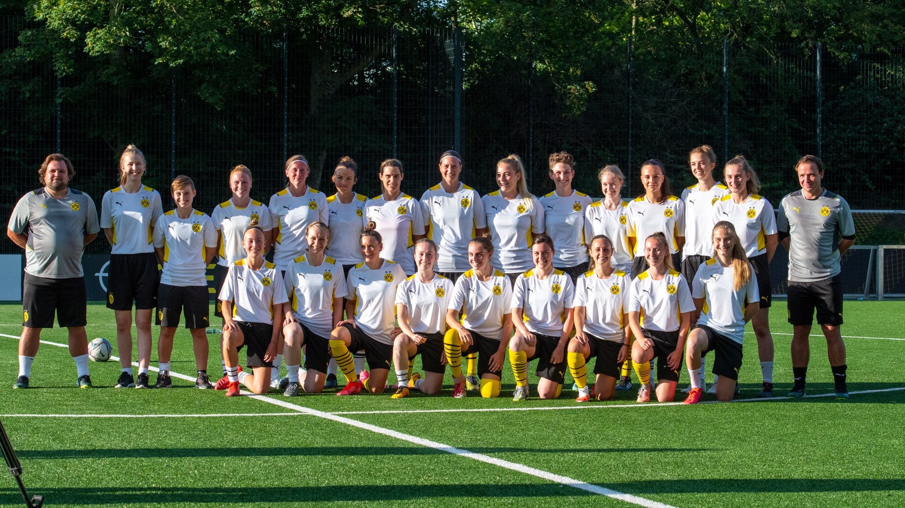

These are the players who have appeared in a preseason friendly thus far. Previous clubs and leagues via Transfermarkt forums. Corrections and additions welcome.
| Player | Number | Position | Age | Date of Birth | Previous Club | Previous League | Note | ||
|---|---|---|---|---|---|---|---|---|---|
| {{ player.first }} {{ player.last }} | {{ player.number }} | {{ player.position }} | {{ player.age }} | {{ player.dob | date: '%B %-d, %Y' }} | {{ player.prev_club }} | {{ player.prev_league }} | {{ player.instagram }} | {{ player.twitter }} | {{ player.note }} |